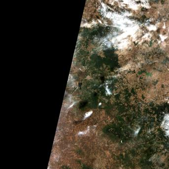
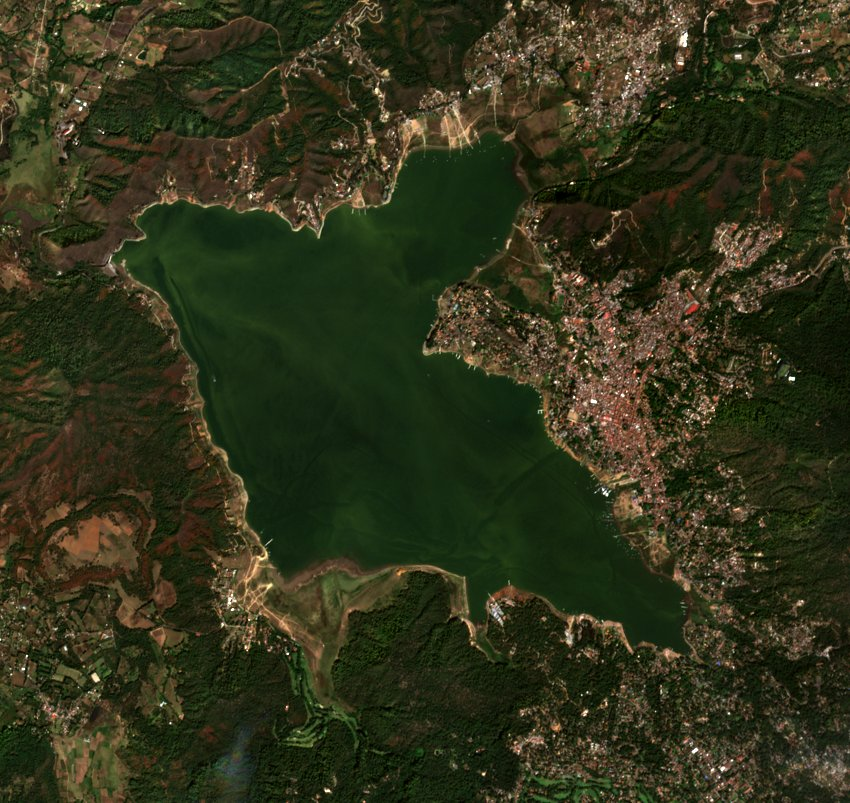
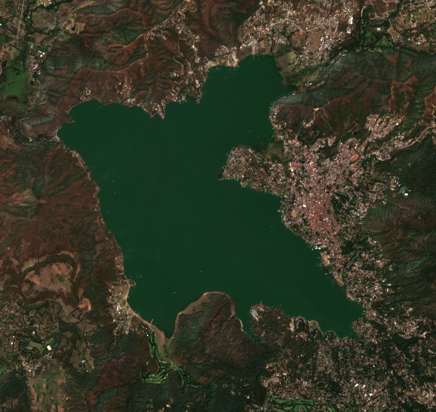
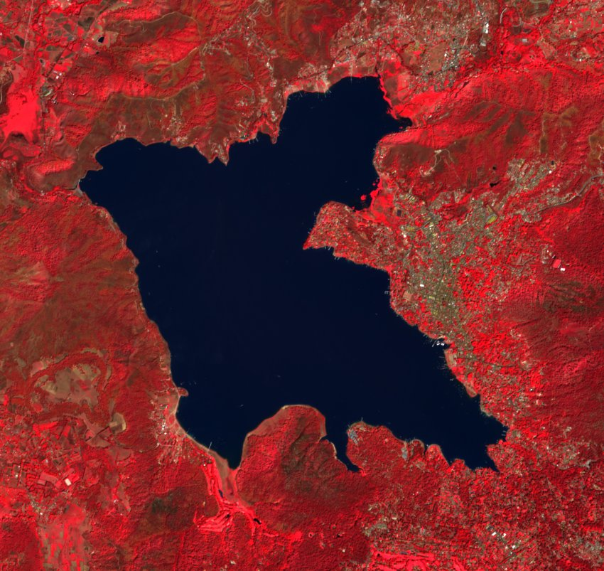
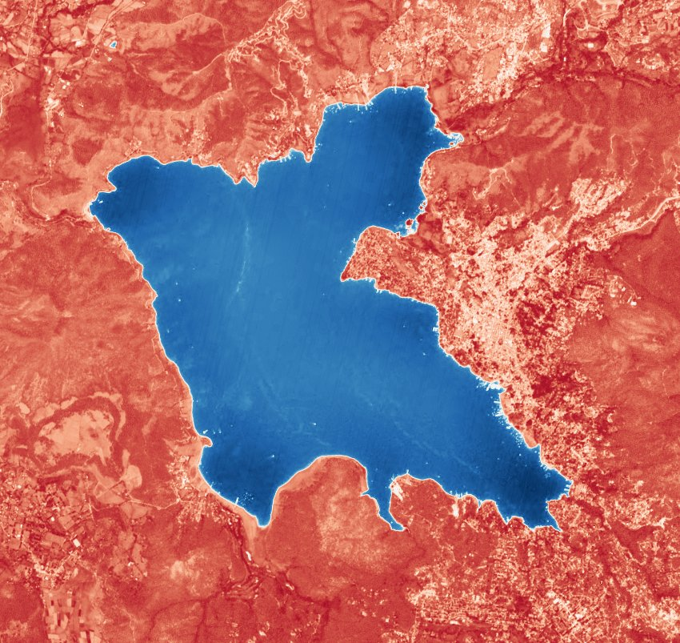
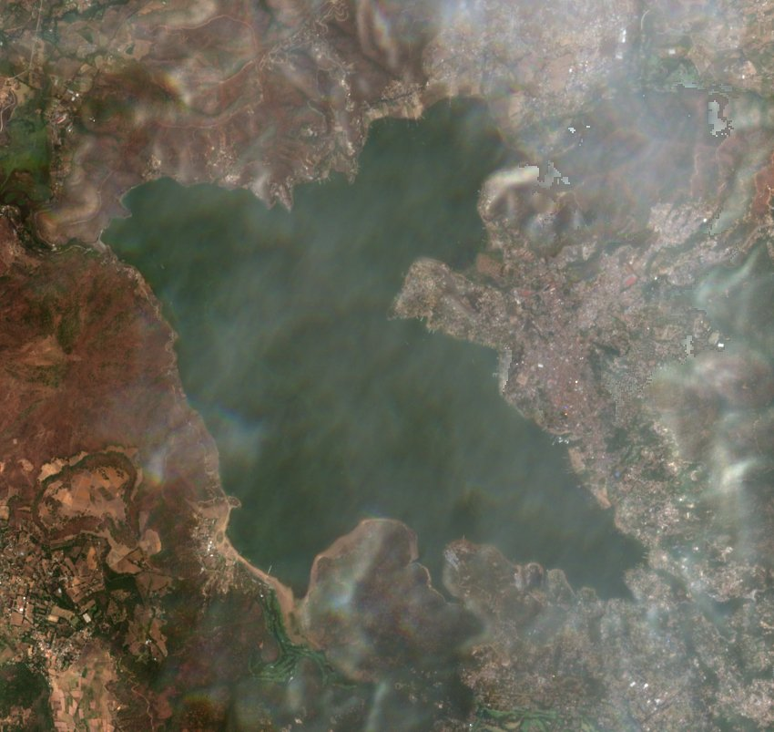

Valle de Bravo storage
Pick a month to estimate how much water the lake held.
A showcase measured ahead of time, covering . Run the project locally to measure any month since 2019.
Storage by month
How full
- Estimate
- —
- CONAGUA
- —
- Same month, a year before
- —
Satellite passes
| Date | Lake clear | Water area | Estimate | Fill | CONAGUA | Difference |
|---|
Observations, January 2025 to November 2026
-
+100hm³
The 2025 rainy season refilled the lake. It went from about 250 hm³ (63% of NAMO) in May 2025 to about 349 hm³ (88%) in November, after a low of 98 hm³ (25%) in April 2024.
-
2–6hm³
While CONAGUA still reported (January to April 2025), clear passes from March on came within 2–6 hm³ of its figures, always slightly under. Some January passes were 20–47 hm³ under.
-
354 → 303hm³
The 2026 dry season drew the lake down from January to June. The rains then brought it back up, to about 363 hm³ (92%) on the one pass so far in November 2026, the highest in this showcase.
-
3months
June 2025, September 2025 and September 2026 have no estimate: every pass was over 20% cloud. August 2025 and October 2026 rest on a single pass, so they're less certain.
About this project
Read the full project overview Browse the codeObjective
The objective of this project was to learn some fundamental concepts of Geospatial Science and Earth Observation: Python libraries and satellite imagery, including bands, STAC and the Copernicus API. It also provides a way to estimate the reservoir storage, as the SINA API stopped providing data after April 23, 2025.
Due to time constraints I could not implement the rest of the Cutzamala reservoirs, but I implemented the estimation for the most important one: Valle de Bravo.
Conclusion
Imagery is more robust than I thought. It's amazing to me that using reflectance and other algorithms you can calculate and estimate sizes. No need for ML models for everything: in the end, you can use mathematical models to make the calculations you need.
This was extremely useful for me as an introduction to understand how a geospatial pipeline works, and the standards and systems behind things I did not know before.
Progress, step by step





